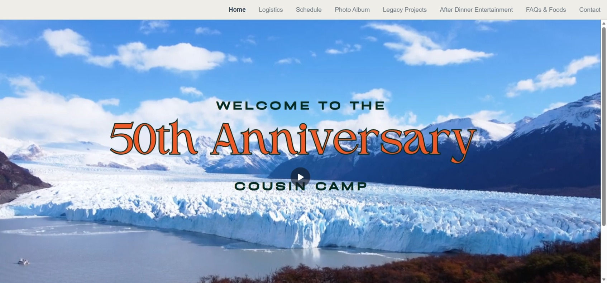

ASU Graphic Information Technology (UX) Student
Visual designer growing into UX.
I'm Andrea Marchant, a Graphic Information Technology student at Arizona State University focused on creating thoughtful, polished, and people-centered digital and visual experiences. My work blends design, communication, and creativity across web, branding, layout, and visual storytelling.
Current Focus
Designing with clarity, creativity, and growth in mind.
Building a portfolio that reflects both strong visual design foundations and a growing UX mindset.

Featured Case Study
Engineering Company Website
A professional website concept designed to communicate credibility, clarity, and structure for a modern engineering firm. The project focused on visual hierarchy, service clarity, and user-friendly navigation.
View Case StudyFeatured Projects
Selected work in web, print, and creative communication
A collection of projects that demonstrate design thinking, layout skills, storytelling, and digital content creation across different formats.

Engineering Company Website
A professional website concept focused on clear structure, credibility, and organized presentation of services for an engineering-related audience.

Children's Seek & Find Book
A playful and visually engaging children's project centered on illustration, layout, and designing for a young audience with clarity and fun in mind.

Community Cookbook
A collaborative publication project combining typography, page layout, and visual consistency to create an inviting, readable cookbook experience.

Family Calendar
A practical design project focused on organization, usability, and clean information hierarchy for everyday family planning and scheduling.

Family Reunion Website
A website created to communicate event details, build excitement, and provide a welcoming digital space for family members preparing for a reunion.

Reunion Brochure Design
A companion print design piece developed to support event communication through strong layout, branding consistency, and visual accessibility.

E.O.P.M. Website Concept
A creative web concept exploring visual identity, structure, and digital presentation through a custom website experience.
Additional Visual Design
Poster and branding-focused creative work
These projects highlight my interest in concept development, visual communication, illustration, and designing with strong emotional or thematic impact.

Muunto Launch Poster
A poster concept developed around branding, atmosphere, and visual storytelling for a bold, meaningful launch moment.

AI & Computer Science Poster
A visual design project combining typography, illustration, and composition to promote an academic or innovation-focused event.
About Me
Designing with intention while growing into UX
I'm Andrea Marchant, an Arizona State University Graphic Information Technology student with a focus in UX. My background is rooted in visual design, where I enjoy creating polished layouts, engaging digital experiences, and work that communicates clearly.
As I continue building my skills, I'm especially interested in the intersection of visual design and user experience — creating work that is not only attractive, but also useful, thoughtful, and audience-centered.
This portfolio reflects projects across web design, print design, creative storytelling, and visual communication as I grow into a stronger UX designer and digital creative.
Skills & Tools
Creative and Technical Foundations
Design
- Visual Design
- Typography
- Layout & Composition
- Poster Design
- Branding Concepts
Web & UX Growth
- HTML/CSS
- Responsive Design
- Website Structure
- User-Centered Thinking
- Portfolio Development
Tools
- Adobe Illustrator
- Adobe InDesign
- Adobe Photoshop
- Wordpress
- Wix
- Squarespace
- Canva
- GitHub
- Pen Code
- Visual Studio Code
- Microsoft Office Suite
Contact
Let's connect
I'm building my portfolio as a visual designer growing into UX and would love to connect about internships, creative opportunities, or future design roles.